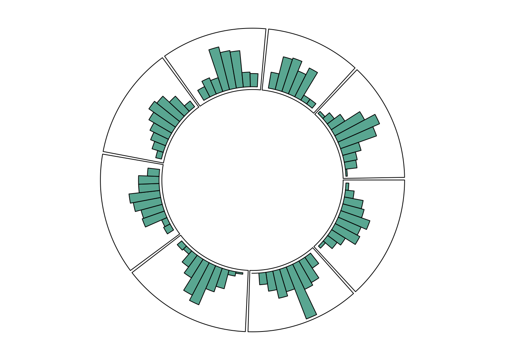

Show/Hide Code
library(circlize) # 绘制弦图的核心包
library(migest) # 用于分析人口迁移数据
library(tidyverse) # 数据处理与可视化核心包
library(viridis) # 提供美观的调色板
library(patchwork) # 用于组合图形
library(hrbrthemes) # 提供额外的主题
library(chorddiag) # 绘制交互式弦图library(circlize) # 绘制弦图的核心包
library(migest) # 用于分析人口迁移数据
library(tidyverse) # 数据处理与可视化核心包
library(viridis) # 提供美观的调色板
library(patchwork) # 用于组合图形
library(hrbrthemes) # 提供额外的主题
library(chorddiag) # 绘制交互式弦图circlize# 加载 circlize 包
library(circlize)
# 创建示例数据集
data <- data.frame(
factor = sample(letters[1:8], 1000, replace = TRUE), # 创建一个包含8个水平的因子
x = rnorm(1000), # 创建符合正态分布的x值
y = runif(1000) # 创建符合均匀分布的y值
)
# 步骤1: 初始化图表, 提供因子和x轴数据
circos.initialize(factors = data$factor, x = data$x)
# 步骤2: 构建绘图区域, 提供因子和y轴数据, 并使用 panel.fun 参数绘制坐标轴
circos.trackPlotRegion(
factors = data$factor,
y = data$y,
panel.fun = function(x, y) {
circos.axis()
}
)
# 步骤3: 在图表中添加散点
circos.trackPoints(data$factor, data$x, data$y,
col = "blue", # 设置点的颜色
pch = 16, # 设置点的形状 (实心圆)
cex = 0.5 # 设置点的大小
)基础弦图:
# 加载 circlize 包
library(circlize)
# 创建示例数据集
data <- data.frame(
factor = sample(letters[1:8], 1000, replace = TRUE), # 创建一个包含8个水平的因子
x = rnorm(1000), # 创建符合正态分布的x值
y = runif(1000) # 创建符合均匀分布的y值
)
# 步骤1: 初始化图表, 提供因子和x轴数据
circos.initialize(factors = data$factor, x = data$x)
# 步骤2: 构建绘图区域, 并绘制默认坐标轴
circos.trackPlotRegion(
factors = data$factor,
y = data$y,
panel.fun = function(x, y) {
circos.axis()
}
)
# 步骤3: 在图表中添加散点
circos.trackPoints(data$factor, data$x, data$y)自定义样式的弦图:
# 加载 circlize 包
library(circlize)
# 创建示例数据集
data <- data.frame(
factor = sample(letters[1:8], 1000, replace = TRUE), # 创建一个包含8个水平的因子
x = rnorm(1000), # 创建符合正态分布的x值
y = runif(1000) # 创建符合均匀分布的y值
)
# --- 全局参数自定义 ---
# 使用 par() 函数设置全局绘图参数
par(
mar = c(1, 1, 1, 1), # 图表的外边距
bg = '#f5f5f5' # 图表的背景颜色
)
# 使用 circos.par() 函数设置 circlize 的特定参数
circos.par("track.height" = 0.6) # 设置轨道高度为总高度的60%
# 步骤1: 初始化图表, 提供因子和x轴数据
circos.initialize(factors = data$factor, x = data$x)
# 步骤2: 构建绘图区域, 并在其中自定义坐标轴样式
circos.trackPlotRegion(
factors = data$factor,
y = data$y,
panel.fun = function(x, y) {
circos.axis(
h = "top", # x轴位于轨道的内侧还是外侧 ("top" 或 "bottom")
labels = TRUE, # 是否显示轴标签
major.tick = TRUE, # 是否显示主刻度线
labels.cex = 0.5, # 标签的缩放倍数 (值越大, 字体越大)
labels.font = 1, # 标签的字体样式 (1:常规, 2:粗体, 3:斜体, 4:粗斜体)
direction = "outside", # 刻度线的方向, 指向圆外 ("outside") 或圆内 ("inside")
minor.ticks = 4, # 主刻度之间次要刻度的数量
major.tick.percentage = 0.1, # 主刻度线长度占轨道高度的百分比
lwd = 2 # 刻度线和x轴线的宽度
)
}
)
# 步骤3: 添加自定义样式的散点
circos.trackPoints(data$factor, data$x, data$y,
col = "#69b3a2", # 设置点的颜色
pch = 16, # 设置点的形状 (实心圆)
cex = 0.5 # 设置点的大小
)# 加载 circlize 包
library(circlize)
# 设置轨道高度为总高度的40%
circos.par("track.height" = 0.4)
# 创建示例数据集
data <- data.frame(
factor = sample(letters[1:8], 1000, replace = TRUE), # 创建一个包含8个水平的因子
x = rnorm(1000), # 创建符合正态分布的x值
y = runif(1000) # 创建符合均匀分布的y值
)
# 步骤1: 初始化图表, 提供因子和x轴数据
circos.initialize(factors = data$factor, x = data$x)
# 步骤2: 构建绘图区域, 并绘制默认坐标轴
circos.trackPlotRegion(
factors = data$factor,
y = data$y,
panel.fun = function(x, y) {
circos.axis()
}
)
# 步骤3: 添加散点
circos.trackPoints(data$factor, data$x, data$y, col = "#69b3a2")# 加载 circlize 包
library(circlize)
# 设置轨道高度为总高度的40%
circos.par("track.height" = 0.4)
# 创建示例数据集
data <- data.frame(
factor = sample(letters[1:8], 1000, replace = TRUE), # 创建一个包含8个水平的因子
x = rnorm(1000), # 创建符合正态分布的x值
y = runif(1000) # 创建符合均匀分布的y值
)
# 步骤1: 初始化图表, 提供因子和x轴数据
circos.initialize(factors = data$factor, x = data$x)
# 步骤2: 构建绘图区域, 并绘制默认坐标轴
circos.trackPlotRegion(
factors = data$factor,
y = data$y,
panel.fun = function(x, y) {
circos.axis()
}
)
# 步骤3: 添加折线
# 注意: 需要对x和y值按x的顺序进行排序, 以确保线条正确连接
circos.trackLines(data$factor,
data$x[order(data$x)],
data$y[order(data$x)],
col = rgb(0.1, 0.5, 0.8, 0.3), # 设置线条颜色和透明度
lwd = 2 # 设置线条宽度
)# 加载 circlize 包
library(circlize)
# 设置轨道高度为总高度的40%
circos.par("track.height" = 0.4)
# 创建示例数据集
data <- data.frame(
factor = sample(letters[1:8], 1000, replace = TRUE), # 创建一个包含8个水平的因子
x = rnorm(1000), # 创建符合正态分布的x值
y = runif(1000) # 创建符合均匀分布的y值
)
# 步骤1: 初始化图表, 提供因子和x轴数据
circos.initialize(factors = data$factor, x = data$x)
# 步骤2: 构建绘图区域, 并绘制默认坐标轴
circos.trackPlotRegion(
factors = data$factor,
y = data$y,
panel.fun = function(x, y) {
circos.axis()
}
)
# 步骤3: 添加垂线
# type = "h" 表示绘制从y=0到数据点的垂直线段
circos.trackLines(data$factor,
data$x[order(data$x)],
data$y[order(data$x)],
col = rgb(0.1, 0.5, 0.8, 0.3), # 设置线条颜色和透明度
lwd = 2, # 设置线条宽度
type = "h" # 设置线条类型为垂线
)# 加载 circlize 包
library(circlize)
# 设置轨道高度为总高度的40%
circos.par("track.height" = 0.4)
# 创建示例数据集
data <- data.frame(
factor = sample(letters[1:8], 1000, replace = TRUE), # 创建一个包含8个水平的因子
x = rnorm(1000), # 创建符合正态分布的x值
y = runif(1000) # y值在此图中未使用
)
# 步骤1: 初始化图表, 仅提供因子和x轴数据范围
circos.initialize(factors = data$factor, x = data$x)
# 步骤2: 直接使用高级函数绘制直方图轨道
# circos.trackHist 会自动创建轨道并计算和绘制直方图
circos.trackHist(data$factor,
data$x,
bg.col = "white", # 设置轨道的背景色
col = "#69b3a2" # 设置直方图的填充色
)
加载包并创建数据:
library(circlize) # 加载 circlize 包
circos.clear() # 清除当前的圆形布局, 避免图形叠加
# 创建一个示例数据集
data <- data.frame(
factor = sample(letters[1:8], 1000, replace = TRUE), # 创建一个包含8个水平的因子变量
x = rnorm(1000), # 创建一个符合正态分布的x变量
y = runif(1000) # 创建一个符合均匀分布的y变量
)# 初始化圆形图
par(mar = c(1, 1, 1, 1)) # 设置图形边距
circos.initialize(
factors = data$factor, # 使用 factor 列作为圆形图的扇区
x = data$x # 使用 x 列作为每个扇区的x轴范围
)
# --- 构建第一个轨道区域 ---
circos.trackPlotRegion(
factors = data$factor, # 指定扇区
y = data$y, # 指定y轴数据, 用于确定轨道的高度范围
panel.fun = function(x, y) {
circos.axis(
labels.cex = 0.5, # 坐标轴标签字体大小
labels.font = 1, # 坐标轴标签字体样式
lwd = 0.8 # 坐标轴线宽
)
}
)
# 在第一个轨道上添加散点
circos.trackPoints(
data$factor, # 指定扇区
data$x, # 指定散点的x坐标
data$y, # 指定散点的y坐标
col = rgb(0.1, 0.5, 0.8, 0.3), # 设置点的颜色(含透明度)
pch = 20 # 设置点的形状为实心圆
)
# --- 构建第二个轨道区域 ---
circos.trackPlotRegion(
factors = data$factor, # 指定扇区
y = data$y, # 指定y轴数据
panel.fun = function(x, y) {
circos.axis(
labels = FALSE, # 不显示坐标轴标签
major.tick = FALSE # 不显示主要刻度线
)
}
)
circos.trackPoints(
data$factor, # 指定扇区
data$x, # 指定散点的x坐标
data$y, # 指定散点的y坐标
col = rgb(0.9, 0.5, 0.8, 0.3), # 设置不同的颜色
pch = 20, # 设置点的形状
cex = 2 # 将点的大小设置为原来的2倍
)
# --- 构建第三个轨道区域 ---
# 设置后续轨道的高度
circos.par("track.height" = 0.4) # 将轨道高度设置为默认值的40%
# 构建第三个轨道区域
circos.trackPlotRegion(
factors = data$factor, # 指定扇区
y = data$y, # 指定y轴数据
panel.fun = function(x, y) {
circos.axis(
labels = FALSE, # 不显示坐标轴标签
major.tick = FALSE # 不显示主要刻度线
)
}
)
# 在第三个轨道上添加垂线 (类似直方图)
circos.trackLines(
data$factor, # 指定扇区
data$x, # 指定线的x坐标
data$y, # 指定线的y坐标 (线的高度)
col = rgb(0.9, 0.5, 0.1, 0.3), # 设置线的颜色
type = "h" # 设置类型为垂线
)library(circlize) # 加载 circlize 包
# 设置绘图布局为 3x3 的矩阵
layout(matrix(1:9, 3, 3))
# 循环 9 次, 创建 9 个独立的圆形图
for (i in 1:9) {
# 设置每个子图的边距(mar)和背景色(bg), 背景设为几乎透明
par(mar = c(0.5, 0.5, 0.5, 0.5), bg = rgb(1, 1, 1, 0.1))
# 定义圆形图的扇区 (1到8)
factors <- 1:8
# 设置扇区间的填充(padding)为0, 使它们紧密相连
circos.par(cell.padding = c(0, 0, 0, 0))
# 初始化圆形图布局
circos.initialize(factors, xlim = c(0, 1))
# 添加一个高度很小的轨道, 并为每个扇区设置随机背景色
circos.trackPlotRegion(
ylim = c(0, 1), # Y轴范围
track.height = 0.05, # 轨道高度设为0.05, 非常窄
bg.col = rand_color(8), # 为8个扇区随机分配颜色
bg.border = NA # 不显示轨道边框
)
# 循环 20 次, 添加 20 条连接线(link)
for (i in 1:20) {
# 随机抽取两个扇区作为连接的起点和终点
se <- sample(1:8, 2)
# 在两个随机扇区的随机位置之间绘制连接线
circos.link(
se[1], runif(2), # 第一个扇区及连接带在该扇区上的起止位置
se[2], runif(2), # 第二个扇区及连接带在该扇区上的起止位置
col = rand_color(1, transparency = 0.4) # 设置连接带为随机的半透明颜色
)
}
# 清除当前圆形图的参数, 以便开始下一次循环的绘制
circos.clear()
}layout(1)library(circlize) # 加载 circlize 包
# --- 1. 数据准备 ---
factors <- letters[1:4] # 创建扇区标识符 (a, b, c, d)
x1 <- runif(100) # 创建用于绘图的随机x坐标
y1 <- runif(100) # 创建用于绘图的随机y坐标
# --- 2. 全局参数设置 ---
# 设置图形边距
par(mar = c(1, 2, 0.1, 0.1))
# 设置circlize的全局参数, 实现"缩放"效果
circos.par(
"track.height" = 0.7, # 设置轨道高度
"canvas.xlim" = c(0, 1), # 设置画布在x方向的可见范围, 类似缩放
"canvas.ylim" = c(0, 1), # 设置画布在y方向的可见范围
"gap.degree" = 0, # 扇区之间无间隙
"clock.wise" = FALSE # 扇区逆时针排列
)
# --- 3. 绘图与更新 ---
# 初始化圆形图, 但不绘制边框
circos.initialize(factors = factors, xlim = c(0, 1))
circos.trackPlotRegion(
factors = factors,
ylim = c(0, 1),
bg.border = NA # 初始时不绘制任何扇区的边框
)
# 单独更新扇区 "a" 的样式, 使其边框可见, 从而突出显示
circos.updatePlotRegion(
sector.index = "a", # 指定要更新的扇区
bg.border = "grey", # 将其背景边框颜色设为灰色
bg.lwd = 0.2 # 设置边框线宽
)
# --- 4. 在更新后的扇区中添加图形元素 ---
# 在当前活跃的扇区 ("a") 中添加垂线
circos.lines(
x1,
y1,
type = "h", # 类型为垂线
col = "#69b3a2", # 设置颜色
lwd = 3 # 设置线宽
)
# 为当前扇区添加坐标轴
circos.axis(
h = "bottom", # 坐标轴位于扇区底部
labels.cex = 0.4, # 标签字体大小
direction = "inside" # 刻度线和标签朝向圆心
)# --- 5. 清理 ---
# 清除布局, 为下一个图做准备
circos.clear()# 加载 circlize 包
library(circlize)
# 创建数据集
set.seed(123) # 设置随机数种子以保证结果的可复现性
data <- data.frame( # 创建一个数据框
factor = sample(letters[1:8], 1000, replace = TRUE), # 从 a-h 8个字母中随机抽样1000次, 作为因子变量
x = rnorm(1000), # 生成1000个符合正态分布的x值
y = runif(1000) # 生成1000个符合均匀分布的y值
)
# 初始化图表
par(mar = c(1, 1, 1, 1)) # 设置图形边距
circos.initialize( # 初始化圆形布局
factors = data$factor, # 指定因子(扇区)
x = data$x # 指定每个扇区的x轴范围
)
# 构建第一个轨道区域
circos.trackPlotRegion( # 创建一个绘图轨道
factors = data$factor, # 指定因子
y = data$y, # 指定y轴的值
bg.col = rgb(0.1, 0.1, seq(0, 1, 0.1), 0.4), # 设置背景颜色, 并带有透明度
bg.border = NA # 不显示轨道边框
)
# 添加一个点到另一个点之间的链接
circos.link(
"a", 0, # 第一个链接点: "a" 扇区, 位置 0
"b", 0, # 第二个链接点: "b" 扇区, 位置 0
h = 0.4 # 设置链接弧线的高度
)
# 添加一个点到一个区域之间的链接
circos.link(
"e", 0, # 第一个链接点: "e" 扇区, 位置 0
"g", c(-1, 1), # 第二个链接区域: "g" 扇区, 范围 -1 到 1
col = "green", # 设置链接颜色为绿色
lwd = 2, # 设置线宽为 2
lty = 2, # 设置线型为虚线
border = "black" # 设置链接区域的边框颜色
)
# 添加一个区域到另一个区域之间的链接
circos.link(
"c", c(-0.5, 0.5), # 第一个链接区域: "c" 扇区, 范围 -0.5 到 0.5
"d", c(-0.5, 0.5), # 第二个链接区域: "d" 扇区, 范围 -0.5 到 0.5
col = "red", # 设置链接颜色为红色
border = "blue", # 设置链接区域的边框颜色为蓝色
h = 0.2 # 设置链接弧线的高度
)circlize 包在圆形布局中添加不同类型的链接# 创建一个邻接矩阵:
# 包含20个起点节点和5个终点节点之间的连接
numbers <- sample(c(1:1000), 100, replace = TRUE) # 从1到1000中随机抽取100个数字,允许重复
data <- matrix(numbers, ncol = 5) # 将这些数字放入一个5列的矩阵中
rownames(data) <- paste0("orig-", seq(1, 20)) # 设置行名, 代表起点
colnames(data) <- paste0("dest-", seq(1, 5)) # 设置列名, 代表终点
# 加载 circlize 包
library(circlize)
# 绘制圆形弦图
chordDiagram(data, transparency = 0.5) # 设置图形透明度为0.5# 创建一个边缘列表:
# 包含10个起点节点和10个终点节点之间的连接
origin <- paste0("orig ", sample(c(1:10), 20, replace = TRUE)) # 创建20个随机的起点
destination <- paste0("dest ", sample(c(1:10), 20, replace = TRUE)) # 创建20个随机的终点
data <- data.frame(origin, destination) # 将起点和终点合并为数据框
# 将输入数据转换为邻接矩阵
adjacencyData <- with(data, table(origin, destination))
# 加载 circlize 包
library(circlize)
# 绘制圆形弦图
chordDiagram(adjacencyData, transparency = 0.5) # 设置图形透明度为0.5创建复杂弦图 (Chord Diagram) :
# --- 1. 加载库并创建初始数据框 ---
# 加载研究所需的 R 包
library(circlize) # 主要用于绘制弦图
# install.packages("migest")
library(migest) # 此处可能用于数据处理, 但在后续代码未直接使用
library(dplyr) # 用于数据整理和操作
# 创建一个数据框 m
# 包含了国家名称、顺序、移民数据以及用于绘图的RGB颜色值
m <- data.frame(
order = 1:6,
country = c("Ausralia", "India", "China", "Japan", "Thailand", "Malaysia"),
V3 = c(1, 150000, 90000, 180000, 15000, 10000),
V4 = c(35000, 1, 10000, 12000, 25000, 8000),
V5 = c(10000, 7000, 1, 40000, 5000, 4000),
V6 = c(7000, 8000, 175000, 1, 11000, 18000),
V7 = c(70000, 30000, 22000, 120000, 1, 40000),
V8 = c(60000, 90000, 110000, 14000, 30000, 1),
r = c(255, 255, 255, 153, 51, 51),
g = c(51, 153, 255, 255, 255, 255),
b = c(51, 51, 51, 51, 51, 153),
stringsAsFactors = FALSE
)
# --- 2. 将数据框处理成绘图所需的矩阵格式 ---
# 提取国家、顺序和颜色信息到 df1
df1 <- m[, c(1, 2, 9:11)]
# 从 m 中移除元数据列, 并将数值除以 1e04 进行缩放
m <- m[, -(1:2)] / 1e04
m <- as.matrix(m[, c(1:6)]) # 将数据框转换为矩阵
# 为矩阵设置行名和列名, 分别代表起点和终点国家
dimnames(m) <- list(orig = df1$country, dest = df1$country)
# 根据 order 列对 df1 进行排序, 并将 country 列转换为因子类型以固定顺序
df1 <- arrange(df1, order)
df1$country <- factor(df1$country, levels = df1$country)
# 确保矩阵 m 的行和列顺序与 df1 严格一致
m <- m[levels(df1$country), levels(df1$country)]
# --- 3. 设置 circos 图的扇区范围和颜色 ---
# 计算每个扇区的 x 轴范围 (xmin, xmax)
# 扇区的总长度等于该国所有流出量和所有流入量的总和
df1$xmin <- 0
df1$xmax <- rowSums(m) + colSums(m)
# 获取国家数量
n <- nrow(df1)
# 使用 rgb() 函数根据 r, g, b 列创建扇区的填充颜色 (rcol)
df1$rcol <- rgb(df1$r, df1$g, df1$b, max = 255)
# 创建带有透明度的链接颜色 (lcol)
df1$lcol <- rgb(df1$r, df1$g, df1$b, alpha = 200, max = 255)
# --- 4. 绘制弦图的外部扇区、标签和坐标轴 ---
# 设置绘图区域的边距为0
par(mar = rep(0, 4))
# 清除当前的 circos 绘图设备
circos.clear()
# 设置基本的 circos 图形参数
circos.par(
cell.padding = c(0, 0, 0, 0), # 单元格边距
track.margin = c(0, 0.15), # 轨道边距
start.degree = 90, # 起始角度
gap.degree = 4 # 扇区之间的间隙大小
)
# 初始化 circos 布局
circos.initialize(factors = df1$country, xlim = cbind(df1$xmin, df1$xmax))
# 绘制扇区轨道
circos.trackPlotRegion(
ylim = c(0, 1),
factors = df1$country,
track.height = 0.1,
# panel.fun 会为每个扇区执行一次
panel.fun = function(x, y) {
# 获取当前扇区的元数据
name <- get.cell.meta.data("sector.index")
i <- get.cell.meta.data("sector.numeric.index")
xlim <- get.cell.meta.data("xlim")
ylim <- get.cell.meta.data("ylim")
# 根据角度判断文本显示方向 (dd) 和对齐方式 (aa)
theta <- circlize(mean(xlim), 1.3)[1, 1] %% 360
dd <- ifelse(theta < 90 || theta > 270, "clockwise", "reverse.clockwise")
aa <- c(1, 0.5)
if (theta < 90 || theta > 270) {
aa <- c(0, 0.5)
}
# 绘制国家标签
circos.text(
x = mean(xlim), y = 1.7, labels = name,
facing = dd, cex = 0.6, adj = aa
)
# 绘制主扇区矩形
circos.rect(
xleft = xlim[1], ybottom = ylim[1], xright = xlim[2], ytop = ylim[2],
col = df1$rcol[i], border = df1$rcol[i]
)
# 在主扇区中绘制一个白色矩形, 用于区分流入和流出
circos.rect(
xleft = xlim[1], ybottom = ylim[1], xright = xlim[2] - rowSums(m)[i], ytop = ylim[1] + 0.3,
col = "white", border = "white"
)
# 在内圈绘制一圈白色细线
circos.rect(xleft = xlim[1], ybottom = 0.3, xright = xlim[2], ytop = 0.32, col = "white", border = "white")
# 绘制坐标轴 (已移除无效参数)
circos.axis(
labels.cex = 0.6, direction = "outside",
major.at = seq(from = 0, to = floor(df1$xmax)[i], by = 5),
minor.ticks = 1
)
}
)
# --- 5. 绘制国家之间的流量链接 ---
# 在 df1 中添加 sum1 和 sum2 列, 用于标记链接的起始位置
# sum1 用于流出链接, sum2 用于流入链接
df1$sum1 <- colSums(m)
df1$sum2 <- numeric(n)
# 创建一个长格式的数据框 df2, 并按流量大小 (m) 降序排列
# 这样做可以确保流量最大的链接最先被绘制, 避免被覆盖
df2 <- cbind(as.data.frame(m), orig = rownames(m), stringsAsFactors = FALSE)
df2 <- reshape(df2,
idvar = "orig", varying = list(1:n), direction = "long",
timevar = "dest", time = rownames(m), v.names = "m"
)
df2 <- arrange(df2, desc(m))
# 为了避免图形混乱, 只保留大于60%分位数的流量数据
df2 <- subset(df2, m > quantile(m, 0.6))
# 循环绘制每个链接
for (k in 1:nrow(df2)) {
# 获取当前流量的起点(i)和终点(j)索引
i <- match(df2$orig[k], df1$country)
j <- match(df2$dest[k], df1$country)
# 绘制链接
circos.link(
sector.index1 = df1$country[i],
point1 = c(df1$sum1[i], df1$sum1[i] + abs(m[i, j])),
sector.index2 = df1$country[j],
point2 = c(df1$sum2[j], df1$sum2[j] + abs(m[i, j])),
col = df1$lcol[i]
)
# 更新 sum1 和 sum2 的值, 以便下一个链接能正确地堆叠在前一个链接之上
df1$sum1[i] <- df1$sum1[i] + abs(m[i, j])
df1$sum2[j] <- df1$sum2[j] + abs(m[i, j])
}# -- 1. 加载所需的库 --
library(tidyverse) # 用于数据整理和转换, 核心包
library(viridis) # 提供美观的调色板
library(patchwork) # 用于组合图形 (此示例未直接使用, 但通常有用)
library(hrbrthemes) # 提供主题 (此示例未直接使用)
library(circlize) # 绘制弦图的核心包
# remotes::install_github("mattflor/chorddiag")
library(chorddiag) # 用于绘制交互式弦图 (在第二个例子中使用)
# -- 2. 从 Github 加载数据集 --
# 这是一个邻接矩阵, 表示地区间的流量
data <- read.table("https://raw.githubusercontent.com/holtzy/data_to_viz/master/Example_dataset/13_AdjacencyDirectedWeighted.csv", header = TRUE)
# -- 3. 数据预处理 --
# 缩短列名以便在图上更好地显示
short_names <- c("Africa", "East Asia", "Europe", "Latin Ame.", "North Ame.", "Oceania", "South Asia", "South East Asia", "Soviet Union", "West.Asia")
colnames(data) <- short_names
rownames(data) <- short_names
# 将邻接矩阵 (宽格式) 转换为长格式, 这是 circlize 函数需要的格式
data_long <- data |>
rownames_to_column() |>
gather(key = "key", value = "value", -rowname)
# -- 4. 绘图参数设置 --
circos.clear() # 清除之前的 circos 图形, 重置参数
circos.par(
start.degree = 90, # 从90度角开始绘制, 即顶部
gap.degree = 4, # 扇区之间的间隙大小
track.margin = c(-0.1, 0.1), # 轨道的内外边距
points.overflow.warning = FALSE # 关闭因点超出范围而产生的警告
)
par(mar = rep(0, 4)) # 设置图形边距为0, 使图形充满整个绘图区域
# 创建一个调色板
mycolor <- viridis(10, alpha = 1, begin = 0, end = 1, option = "D")
mycolor <- mycolor[sample(1:10)] # 随机打乱颜色顺序
# -- 5. 绘制基础弦图 --
chordDiagram(
x = data_long, # 使用长格式数据
grid.col = mycolor, # 设置每个扇区的颜色
transparency = 0.25, # 设置链接的透明度
directional = 1, # 设置链接为有方向性
direction.type = c("arrows", "diffHeight"), # 方向性通过箭头和高度差两种方式表示
diffHeight = -0.04, # 链接两端的高度差
annotationTrack = "grid", # 在网格上添加注释轨道
annotationTrackHeight = c(0.05, 0.1), # 注释轨道的高度
link.arr.type = "big.arrow", # 使用大箭头样式
link.sort = TRUE, # 对链接进行排序
link.largest.ontop = TRUE # 将最大的链接绘制在最上层
)
# -- 6. 在注释轨道上添加文本和坐标轴 --
circos.trackPlotRegion(
track.index = 1, # 在第一个轨道上操作
bg.border = NA, # 不绘制轨道背景的边框
panel.fun = function(x, y) { # 对每个扇区执行的函数
xlim <- get.cell.meta.data("xlim")
sector.index <- get.cell.meta.data("sector.index")
# 添加扇区名称
circos.text(
x = mean(xlim), # 文本位于扇区中间
y = 3.2, # 文本的 Y 坐标 (可以调整以改变距离)
labels = sector.index, # 文本内容为扇区名称
facing = "bending", # 文本方向沿扇区弯曲
cex = 0.8 # 文本大小
)
# 添加坐标轴刻度
circos.axis(
h = "top", # 刻度线朝外
# 动态设置刻度间隔: 如果扇区范围大于10, 则间隔为2, 否则为1
major.at = seq(from = 0, to = xlim[2], by = ifelse(test = xlim[2] > 10, yes = 2, no = 1)),
minor.ticks = 1, # 主刻度之间的小刻度数量
major.tick.percentage = 0.5, # 主刻度线长度占轨道高度的百分比
labels.niceFacing = FALSE # 不自动优化标签方向
)
}
)# 加载 chorddiag 包
library(chorddiag)
# 创建一个 4x4 的矩阵
# 数据代表拥有某种发色的人群, 对不同发色的偏好
m <- matrix(c(
11975, 5871, 8916, 2868,
1951, 10048, 2060, 6171,
8010, 16145, 8090, 8045,
1013, 990, 940, 6907
),
byrow = TRUE,
nrow = 4, ncol = 4
)
# 定义分组名称和颜色
haircolors <- c("black", "blonde", "brown", "red")
groupColors <- c("#000000", "#FFDD89", "#957244", "#F26223")
# 为矩阵设置行名和列名
dimnames(m) <- list(
have = haircolors,
prefer = haircolors
)
# 绘制交互式弦图
chorddiag(m,
groupColors = groupColors, # 指定分组颜色
groupnamePadding = 20 # 分组名称与图形的间距
)使用 chorddiag 包绘制的头发颜色偏好交互式弦图
# 加载 chorddiag 包
# 如果尚未安装, 请执行 install.packages("chorddiag")
# 或者从 Github 安装最新版: devtools::install_github("mattflor/chorddiag")
library(chorddiag)
# 创建一个 4x4 的数据矩阵 m
# 行代表拥有某种发色的人群, 列代表他们偏好的发色
m <- matrix(c(
11975, 5871, 8916, 2868,
1951, 10048, 2060, 6171,
8010, 16145, 8090, 8045,
1013, 990, 940, 6907
),
byrow = TRUE,
nrow = 4, ncol = 4
)
# 创建一个向量, 用于定义4个分组的名称
haircolors <- c("black", "blonde", "brown", "red")
# 为矩阵 m 的行和列设置维度名称
dimnames(m) <- list(
have = haircolors,
prefer = haircolors
)
# 创建一个包含4种颜色的向量, 与分组一一对应
groupColors <- c("#000000", "#FFDD89", "#957244", "#F26223")
# 调用 chorddiag 函数构建弦图, 并将其赋值给变量 p
p <- chorddiag(m,
groupColors = groupColors, # 指定分组颜色
groupnamePadding = 20 # 分组名称与图形的间距
)
# 显示图形 (在 RStudio Viewer 或浏览器中)
p不同发色人群的发色偏好交互式弦图